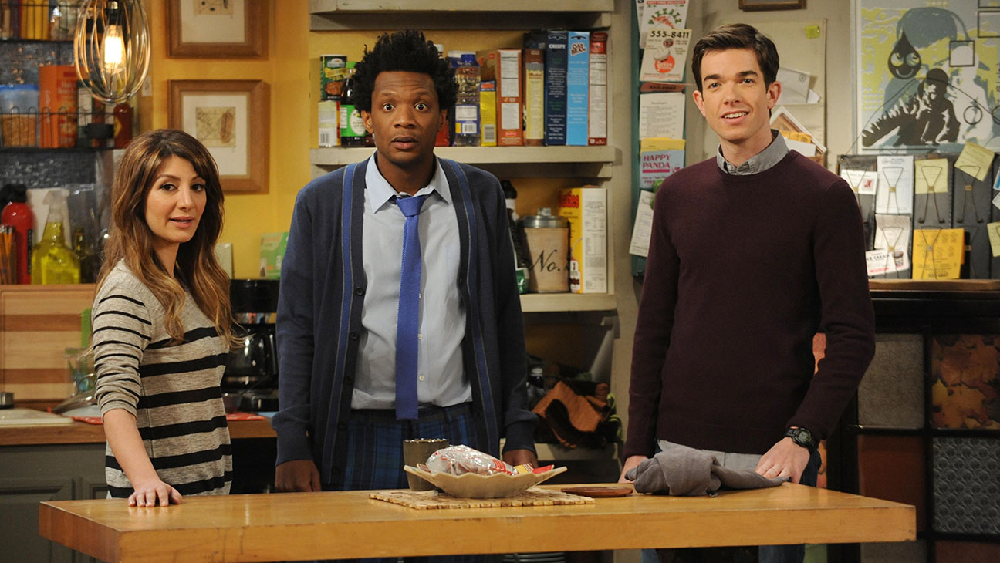
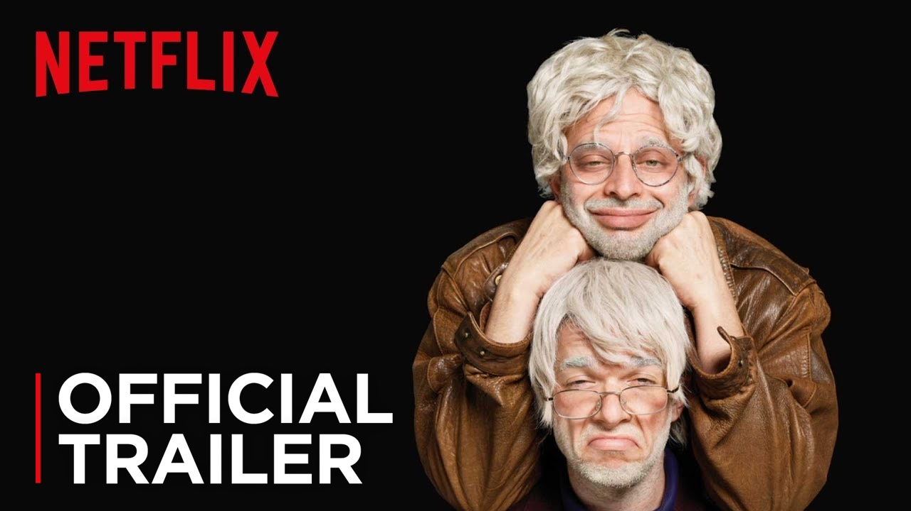
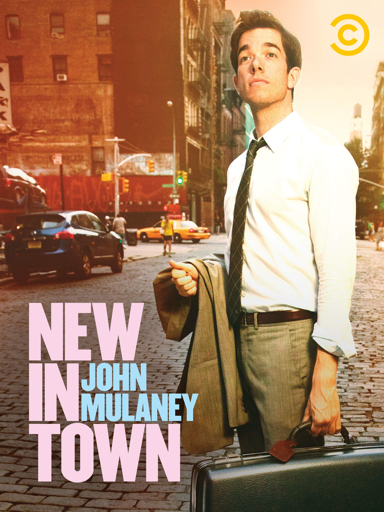
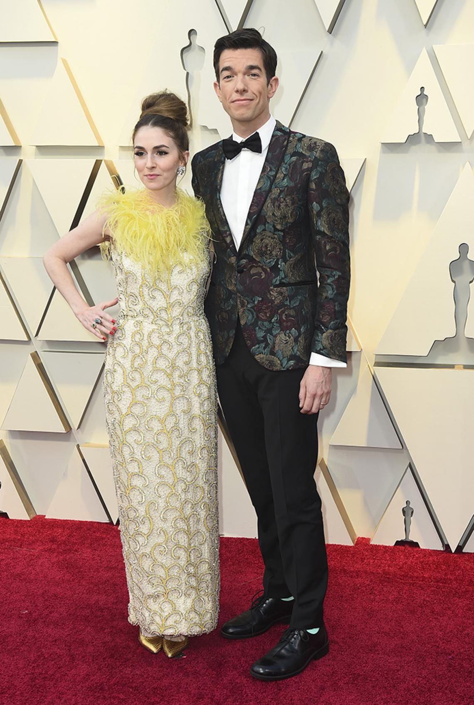

John Edmund Mulaney1 (n. 26 de agosto de 1982) es un cómico, actor, guionista y productor estadounidense mejor conocido por su trabajo como guionista en Saturday Night Live y como humorista con especiales de comedia como: The Top Part, New in Town, The Comeback Kid y Kid Gorgeous, por el que ganó el Premio Emmy en 2018.
Fue el creador y protagonista de la breve comedia de Fox “Mulaney”, una serie semi-autobiográfica sobre su vida ficticia.
Mulaney también se presenta con frecuencia como un personaje llamado George St. Geegland en un dúo cómico con Nick Kroll, más recientemente en Oh, Hello on Broadway desde septiembre de 2016 hasta principios de 2017. También es conocido por ponerle voz a Andrew Glouberman, en la serie de Netflix Big Mouth.
Mulaney hizo su debut en el cine en 2018, interpretando a Peter Parker / Spider-Ham en la película de animación Spider-Man: Into the Spider-Verse de Sony.
En el 2012, su comedia, New In Town, se estrenó en Comedy Central.
Estudió literatura inglesa en la Universidad de Georgetown.
John es el co-creador del personaje recurrente de Saturday Night Live, Stefon, interpretado por Bill Hader. En el 2015, su especial de comedia, The Comeback Kid, se estrenó en Netflix.

Se casó con Annamarie Tendler en el 2014.
